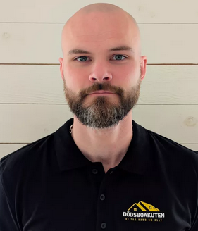
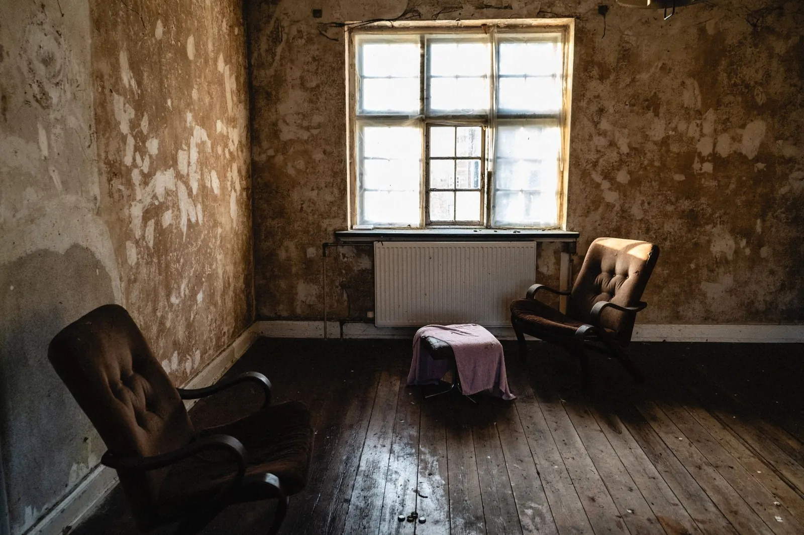

Om Dödsboakuten
Professionell hjälp med dödsbon i Göteborg, Halland och hela Västsverige.
Vilka vi är
Dödsboakuten erbjuder professionell hjälp med dödsbon i Göteborg, Halland och hela Västsverige. Vi stöttar privatpersoner, anhöriga och familjer genom hela processen, som ofta är både känslomässigt svår och full av praktiska uppgifter.
Vi hjälper till med tömning, värdering, köp, städning och sanering, i allt från små lägenheter till stora villor och gårdar. Arbetet sker snabbt och respektfullt, med personlig kontakt genom hela processen. Vid behov samarbetar vi med aktörer i branschen för att kunna erbjuda helhetslösningar.
Våra tjänster

Personlig kontakt
Du har samma kontaktperson genom hela processen, från första samtal till färdigt hem. Vi arbetar med respekt, diskretion och omtanke.
Därför Dödsboakuten
Erfarenhet, helhetslösningar och snabb hjälp.
Ofta på plats inom 24 timmar. Kostnadsfri bedömning. En kontaktperson genom hela processen.
Kontakta ossSnabb hjälp vid akuta behov
Vi kan ofta vara på plats inom 24 timmar när situationen kräver det.
Helhetslösning från start till klart hem
Värdering, köp, tömning, städning och sanering via en och samma kontakt.
Erfarenhet från många dödsbon
Från små lägenheter till stora villor och gårdar. Vi vet vad som krävs.
Respektfull och diskret hantering
Vi arbetar med omtanke om både de anhöriga och den avlidnes hem.
Samarbeten i branschen
Vi samarbetar med mäklare, jurister och städföretag när uppdraget kräver det.
Hela Västsverige
Göteborgsregionen, Halland, Bohuslän och övriga Västra Götaland.

Vi hjälper i hela Västsverige
Göteborgsregionen, Halland, Bohuslän och övriga Västra Götaland.
Kontakt
Kontakta oss
Ring, mejla eller skicka en förfrågan. Den första bedömningen är kostnadsfri.
Exportgatan 73, 422 46 Hisings Backa
Måndag–fredag 08:00–18:00
Helger enligt överenskommelse